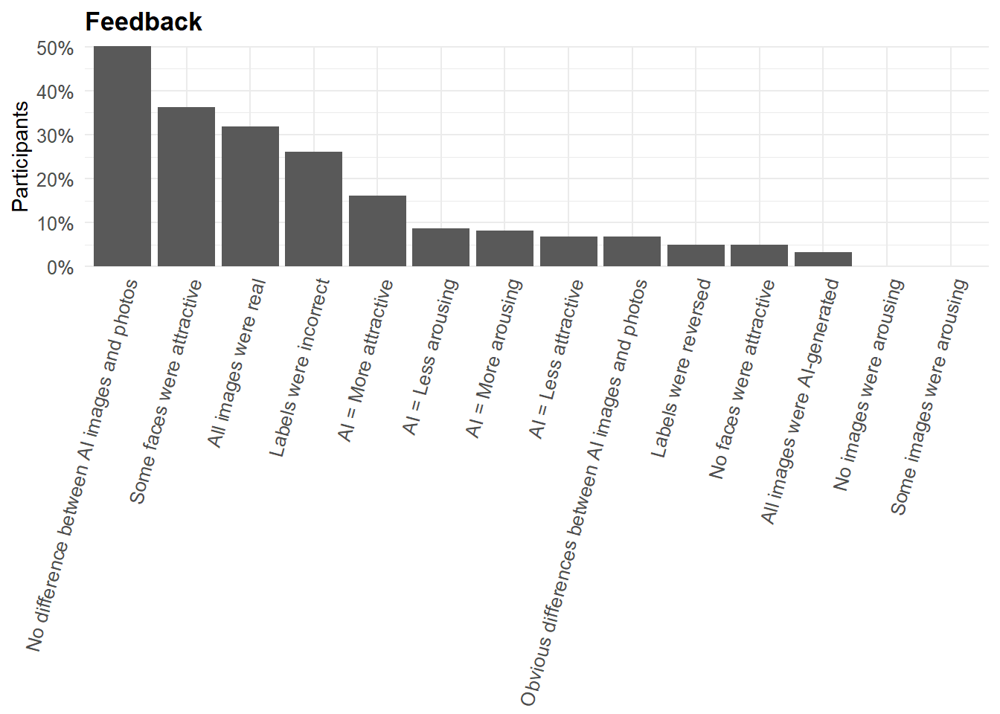

library(tidyverse)library(easystats)library(patchwork)library(ggside)library(ggdist)df <-read.csv("../data/rawdata_participants.csv")dftask <-read.csv("../data/rawdata_task.csv") |>full_join( df[c("Participant", "Gender", "SexualOrientation")], # add Gender and sexual orientation to this datasetby =join_by(Participant) )
The initial sample consisted of 279 participants (Mean age = 37.1, SD = 12.6, range: [18, 80]; Gender: 49.1% women, 49.1% men, 1.79% non-binary; Education: Bachelor, 48.03%; Doctorate, 2.51%; High school, 35.13%; Master, 11.47%; Other, 2.87%; Country: 54.12% United Kingdom, 26.52% South Africa, 11.47% United States, 7.89% other).
df |>select(starts_with("Feedback"), -Feedback_Text, -Feedback_AllRealConfidence, -Feedback_AllFakeConfidence, -Feedback_DiffSubtle, -Feedback_Enjoyment) |>pivot_longer(everything(), names_to ="Question", values_to ="Answer") |>group_by(Question, Answer) |>summarise(prop =n() /nrow(df), .groups ="drop") |>complete(Question, Answer, fill =list(prop =0)) |>filter(Answer =="True") |>mutate(Question =str_remove(Question, "Feedback_"),Question =str_replace(Question, "SomeFacesAttractive", "Some faces were attractive"),Question =str_replace(Question, "NoFacesAttractive", "No faces were attractive"),Question =str_replace(Question, "AILessAttractive", "AI = Less attractive"),Question =str_replace(Question, "AIMoreAttractive", "AI = More attractive"),Question =str_replace(Question, "SomeImagesArousing", "Some images were arousing"),Question =str_replace(Question, "NoImagesArousing", "No images were arousing"),Question =str_replace(Question, "AILessArousing", "AI = Less arousing"),Question =str_replace(Question, "AIMoreArousing", "AI = More arousing"),# Question = str_replace(Question, "DiffSubtle", "Subtle differences between AI images and photos"),Question =str_replace(Question, "DiffNone", "No difference between AI images and photos"),Question =str_replace(Question, "LabelsIncorrect", "Labels were incorrect"),Question =str_replace(Question, "AllReal", "All images were real"),Question =str_replace(Question, "AllFake", "All images were AI-generated"),Question =str_replace(Question, "DiffObvious", "Obvious differences between AI images and photos"),Question =str_replace(Question, "LabelsReversed", "Labels were reversed") ) |>mutate(Question =fct_reorder(Question, desc(prop))) |>ggplot(aes(x = Question, y = prop)) +geom_bar(stat ="identity") +scale_y_continuous(expand =c(0, 0), breaks = scales::pretty_breaks(), labels = scales::percent) +labs(x ="Feedback", y ="Participants", title ="Feedback") +theme_minimal() +theme(plot.title =element_text(size =rel(1.2), face ="bold", hjust =0),plot.subtitle =element_text(size =rel(1.2), vjust =7),axis.text.y =element_text(size =rel(1.1)),axis.text.x =element_text(size =rel(1.1), angle =75, hjust =1),axis.title.x =element_blank() )

Code
df |>select(Feedback_AllRealConfidence, Feedback_AllFakeConfidence) |>pivot_longer(everything(), names_to ="Authenticity", values_to ="Confidence") |>drop_na() |>mutate(Authenticity =str_remove(Authenticity, "Feedback_"),Authenticity =str_replace(Authenticity, "AllRealConfidence", "All images were real"),Authenticity =str_replace(Authenticity, "AllFakeConfidence", "All images were fake") ) |>ggplot(aes(x = Confidence, fill = Authenticity)) +geom_bar() +scale_x_continuous(n.breaks =6) +labs(x ="Confidence (0-5)", y ="Number of Participants", title ="Confidence on the authenticity of the images") +theme_minimal() +theme(plot.title =element_text(size =rel(1.2), face ="bold", hjust =0),plot.subtitle =element_text(size =rel(1.2), vjust =7),axis.text.y =element_text(size =rel(1.1)),axis.title.x =element_blank() )
We removed 1 from the rest of the analysis considering their stimuli choice was not relevant to their sexual orientation - i.e., self-assigned as Heterosexual and choosing male-couples as stimuli.
The final sample includes 261 participants (Mean age = 37.4, SD = 12.7, range: [18, 80]; Gender: 48.7% women, 51.3% men, 0.00% non-binary; Education: Bachelor, 49.04%; Doctorate, 2.68%; High school, 34.10%; Master, 11.11%; Other, 3.07%; Country: 56.32% United Kingdom, 26.82% South Africa, 10.34% United States, 6.51% other).
NOTE that due to a mistake in the study’s implementation, some of the feedback was incorrect, e.g., “Some faces were attractive†and “AI-generated faces were less attractive†rather than “Some images were arousing†and “AI-generated images were less arousingâ€.
115 participants had the old version of the feedback and 146 had the newer version.